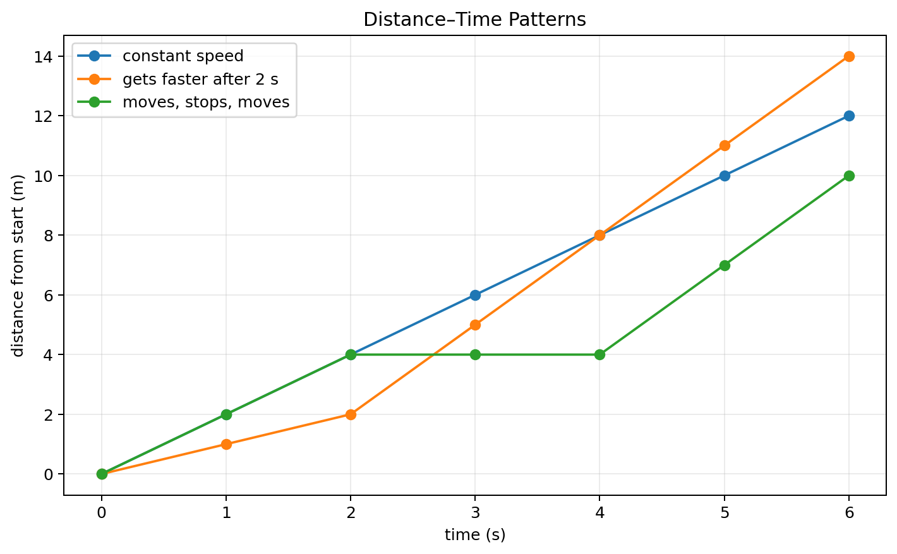
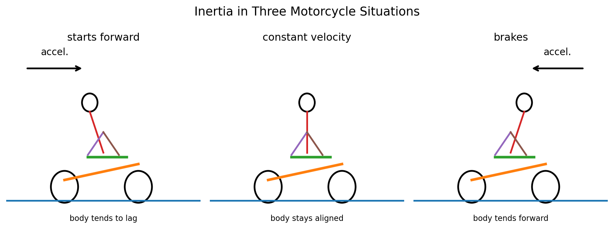

Speed and Velocity
- I can calculate average speed from distance and time.
- I can distinguish instantaneous speed from average speed.
- I can explain that velocity includes both speed and direction and compare examples of constant speed, constant velocity, and changing velocity.
Sort before reading. Place each term where it best fits your current understanding.
Physics needs a precise way to describe how fast motion occurs. Words such as “fast” and “slow” depend on opinion unless they are tied to measurements. Speed compares distance traveled with the time taken. If two runners cover the same distance, the runner who takes less time has the greater average speed. If two runners move for the same time, the runner who covers more distance has the greater average speed.
Average speed uses the whole trip for both quantities. Units matter because speed is a rate. Meters per second (m/s), kilometers per hour (km/h), and miles per hour (mi/h) all mean “distance per time.” A number without a unit is not a complete physical speed.
Average Speed Describes an Interval
An object does not need to move at its average speed every moment. A cyclist may move quickly, stop at a light, and then move quickly again. The stop still counts in elapsed time, so the trip’s average speed can be lower than the cyclist’s speed while moving. Average speed compresses an entire interval into one useful rate.

Distance–time graphs help reveal motion patterns. A straight rising line means distance increases by equal amounts in equal times, so the speed is constant. A steeper line means distance is being added more quickly, so the speed is greater. A horizontal segment means distance from the start is not changing during that interval.
Situation: A cart travels a total distance of 120 m in 10 s.
- Identify total distance: 120 m.
- Identify total elapsed time: 10 s.
- Divide: 120 m ÷ 10 s = 12 m/s.
- Include the unit because the answer is a rate.
Result: Average speed = 12 m/s.
A cart travels a total distance of 60 m in 6 s. Calculate its average speed and include units.
Instantaneous Speed Describes One Moment
A speedometer is designed to show instantaneous speed: the speed at a particular instant. This differs from an average taken over an entire trip. If a car’s speedometer reads 25 m/s right now, that does not mean its average speed for the last twenty minutes was 25 m/s. It may have accelerated, slowed down, or stopped during that interval.
A useful question is, “Does this value describe one moment or an interval?” A radar reading of a baseball at the plate is close to an instantaneous speed. A runner’s 5 km race time is usually used to find an average speed over the entire race.
Velocity Adds Direction
Velocity includes both speed and direction. “15 m/s” is a speed. “15 m/s east” is a velocity. Two objects can have the same speed but different velocities if they move in different directions. A car traveling 20 m/s north and another traveling 20 m/s south have equal speeds but different velocities.
Direction also means velocity can change even when speed stays constant. A car moving around a curve at a steady 15 m/s is changing direction, so its velocity changes. Constant velocity is stricter than constant speed: both the speed and the direction must remain unchanged.
Situation: A runner moves around a circular track at a steady 6 m/s. Is the speed constant? Is the velocity constant?
- The speed is 6 m/s throughout, so speed is constant.
- The runner’s direction continually changes around the track.
- Velocity includes direction, so the velocity changes even though speed does not.
Result: Constant speed does not guarantee constant velocity.
A boat moves straight east at 8 m/s for 30 s. Decide whether its speed and velocity are constant, and explain.
Reading Motion from Graphs
On a distance–time graph, the slope represents how quickly distance changes with time. You do not need advanced graph vocabulary to use this idea: steeper means more distance per unit time. If the graph becomes steeper, the object’s speed has increased. If it becomes less steep, the speed has decreased. If it is flat, the object is not adding distance from the chosen start during that interval.
Be careful: a distance–time graph does not directly show direction because distance is nonnegative and accumulates along the path traveled. To describe velocity, a motion description must also include direction or use a signed position/velocity representation.
Situation: A student walks 30 m in 20 s, waits for 10 s, then walks another 30 m in 20 s.
- Total distance = 30 + 30 = 60 m.
- Total elapsed time includes the wait: 20 + 10 + 20 = 50 s.
- Average speed = 60 m ÷ 50 s = 1.2 m/s.
Result: The waiting time lowers the average speed to 1.2 m/s.
A cyclist travels 100 m in 20 s, stops for 10 s, then travels 50 m in 10 s. Find the average speed for the entire interval.
Constant Speed, Constant Velocity, and Changing Velocity
Constant speed means the magnitude of motion stays the same. Constant velocity means both magnitude and direction stay the same. Changing velocity occurs whenever speed changes, direction changes, or both. This distinction prepares you for acceleration, because acceleration is about changes in velocity.

The motorcycle situations also show why a change in motion feels different from steady motion. During steady straight-line motion, speed and direction can remain constant. During starting or braking, velocity changes. Those changes will become the focus of the next section.